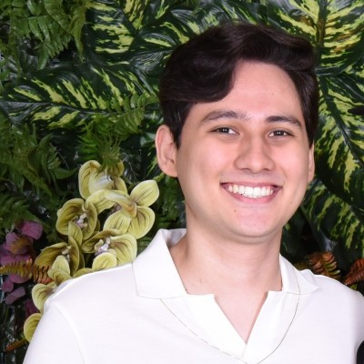

Bruno Hideki Amadeu Ogata

Summary
My name is Bruno Hideki Amadue Ogata, I am a Computer Engineer and I want to start working with web development.
Education
- Bachelor of science and tecnology - Federal University of Sao Paulo (2019-2023)
- Bachelor of computer engineer - Federal University of Sao Paulo (2023-2025)
Work Experience
Intern - Master MR Tecnologia
April 2023 - April 2024
- Elaborate documentation to projects.
- Support clients in case they need help with our products.
- Develop new projects using technologies like VBA and python.
IT Consultant - Master MR Tecnologia
April 2024 - Present
- Elaborate documentation to projects.
- Support clients in case they need help with our products.
- Develop new projects using technologies like VBA and python
- Develop full ETL projects, since the extraction from SAP until the deploy of data in Power BI
Skills
- C programming:⭐️⭐️⭐️⭐️⭐️
- Python programming:⭐️⭐️⭐️⭐️
- C++ programming:⭐️⭐️⭐️
- VBA:⭐️⭐️⭐️⭐️
- Assembly:⭐️⭐️⭐️⭐️
- English:⭐️⭐️⭐️⭐️
- Archtecture of Computers:⭐️⭐️⭐️⭐️
- Operational Systems:⭐️⭐️⭐️⭐️
Awards and Certification
- OBMEP Bronze Medal - INPE (January - 2013)
- OBMEP Bronze Medal - INPE (January - 2014)
- OBMEP Silver Medal - INPE (January - 2015)
Other